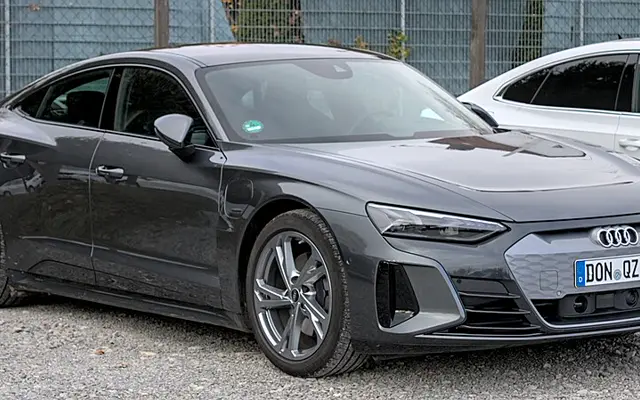

Par Motor › Precios por modelo › Audi e-tron GT
Precio de segunda mano · noviembre de 2026¿Cuánto vale un Audi e-tron GT de segunda mano?

Precio justo estimado de un Audi e-tron GT usado en España, año por año, con los kilómetros normales para su edad y en buen estado: de 51.600 € a 141.800 €. Para tasar el tuyo con sus kilómetros reales y su estado, usa el tasador gratis.
Precios del Audi e-tron GT por año
e-tron GT (2021–2024)
Precio de nuevo: quattro 530 CV, 105.000 € · RS 646 CV, 145.000 €
| Año | Km normales | quattro 530 CV · Eléctrico | RS 646 CV · Eléctrico |
|---|---|---|---|
| 2024 | 35.000 km | 69.100 € | 95.400 € |
| 2023 | 50.000 km | 63.500 € | 87.800 € |
| 2022 | 65.000 km | 58.400 € | 80.700 € |
| 2021 | 80.000 km | 51.600 € | 71.300 € |
e-tron GT (2024) (2024–hoy)
Precio de nuevo: quattro 585 CV, 115.000 € · S 679 CV, 135.000 € · RS 925 CV, 165.000 €
| Año | Km normales | quattro 585 CV · Eléctrico | S 679 CV · Eléctrico | RS 925 CV · Eléctrico |
|---|---|---|---|---|
| 2026 | 5.000 km | 98.800 € | 116.000 € | 141.800 € |
| 2025 | 20.000 km | 82.300 € | 96.600 € | 118.100 € |
| 2024 | 35.000 km | 75.700 € | 88.800 € | 108.600 € |
Kilómetros normales: 15.000 al año en gasolina, híbridos y eléctricos, y 20.000 en diésel, con un máximo de 100.000 km (por encima no tasamos: el precio depende demasiado del historial de cada coche). Cifras redondeadas a 100 €.
Preguntas frecuentes
¿Cuánto vale un Audi e-tron GT de segunda mano?
Según el año, la versión y los kilómetros, un Audi e-tron GT usado vale hoy de 51.600 € a 141.800 € en España. El más barato de nuestra tabla es un quattro de 2021 (51.600 €) y el más caro un RS de 2026 (141.800 €). Son precios justos estimados entre particulares y profesionales, con los kilómetros normales para su edad y en buen estado.
¿Qué motorizaciones tiene el Audi e-tron GT?
En nuestra base de datos hay versiones eléctrico, en 2 generaciónes: e-tron GT y e-tron GT (2024).
¿Cómo sé si me piden demasiado por un Audi e-tron GT?
Abre el tasador de Par Motor, elige el Audi e-tron GT, el año y los kilómetros reales, y escribe lo que te piden. Te diremos si está por debajo del precio justo (chollo) o por encima (caro). Es gratis y no pide registro ni matrícula.
Otros Audi
Compara su coste real
El precio de compra es solo una parte. Mira cuánto te costaría al mes con combustible, seguro, neumáticos, mantenimiento y lo que pierde de valor.
Abrir el comparador →